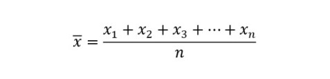

Moda
Em um conjunto de dados, a moda é aquele resultado mais recorrente no conjunto, ou seja,
com maior frequência absoluta.
Exemplo:
Em uma loja de calçados femininos, o estoque é reposto mensalmente. Para entender melhor
o consumo de seus clientes, o dono da loja decidiu anotar o tamanho escolhido pelos 35
primeiros clientes em uma lista:
N = {35, 37, 36, 34, 38, 35, 37, 37, 33, 36, 38, 37,35, 37, 34, 33, 37, 36,
35, 38, 36,35, 36, 37, 38, 39, 37, 37, 36, 37, 33, 37, 35, 37, 39}
Analisando os dados coletados, para realizar o próximo pedido, o tamanho de calçado mais
recorrente entre as clientes é a moda desse conjunto.
N = {35, 37, 36, 34, 38, 35, 37, 37, 33, 36, 38, 37,35, 37, 34, 33, 37, 36,
35, 38, 36, 35, 36, 37, 38, 39, 37, 37, 36, 37, 33, 37, 35, 37, 39}
A partir da moda, é possível perceber que 37 é o tamanho mais recorrente entre as clientes
dessa loja, dado esse que ajudaria a loja na escolha dos tamanhos na hora de repor o estoque.
Representamos a moda por Mo. Nesse caso, temos que Mo = 37.
Para encontrar a moda, basta escolher o valor com maior frequência absoluta.
Mediana
Dado um conjunto numérico, conhecemos como mediana o valor que ocupa a posição central dos
valores quando organizamos esses dados em ordem. Para encontrar a mediana, é possível listar
os termos em ordem crescente ou decrescente e encontrar o termo que ocupa a posição central.
1º caso — quantidade ímpar de elementos
Exemplo:
A altura dos professores da área de ciências da natureza de uma escola foi listada a seguir:
A = { 1,79 m; 1,72 m; 1,63 m; 1,82 m; 1,65 m; 1,75 m; 1,80 m}
Para encontrar a mediana, é essencial que o primeiro passo seja colocar os dados em ordem crescente
ou decrescente.
A = {1,63; 1,65; 1,72; 1,75; 1,79; 1,80; 1,82}
Note que há sete elementos no conjunto. Como há uma quantidade ímpar de elementos, a mediana será o
termo que está exatamente na metade da lista.
2º caso — quantidade par de elementos
Quando a quantidade de elementos do conjunto é par, é necessário calcular a média entre os dois termos
que se encontram no meio do conjunto em ordem.
Exemplo:
B = { 1, 2, 2, 3, 6, 10, 15, 16,16, 20}
Ao realizar a contagem da quantidade de termos, há 10 termos. Então, temos que 10 : 2 = 5, logo os termos
centrais são o 5º e o 6º termo.
O 5º termo da sequência é 6.
O 6º termo da sequência é 10.
A mediana é a soma desses números dividida por 2, ou seja, (10 + 6): 2 = 16 : 2 = 8. Logo, a mediana desse
conjunto é 8.
Média
Entre as medidas centrais, a mais utilizada é a média. Existem vários tipos de média, mas as mais comuns são
a média aritmética simples e a média aritmética ponderada.
Média aritmética simples
A média aritmética é calculada pela soma de todos os elementos do conjunto dividida pela quantidade de elementos
do conjunto.

N: quantidade de elementos
Exemplo:
A idade dos funcionários do departamento de recursos humanos de uma empresa está na lista a seguir:
{28, 30, 29, 31, 32, 33, 34}
Calcule a idade média dos funcionários desse departamento.
Resolução:
Sabemos que há 7 elementos, então temos que:
Média aritmética ponderada
Na média aritmética ponderada, são atribuídos pesos para cada um dos valores. Quanto maior for o peso,
maior será a influência daquele determinado dado no valor da média aritmética ponderada.
Para calcular a média aritmética ponderada, utilizamos a fórmula: